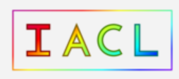
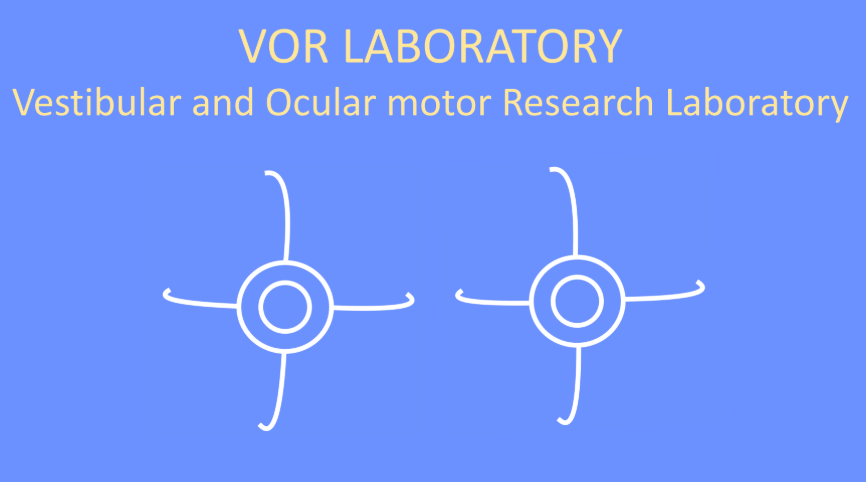
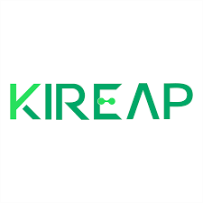
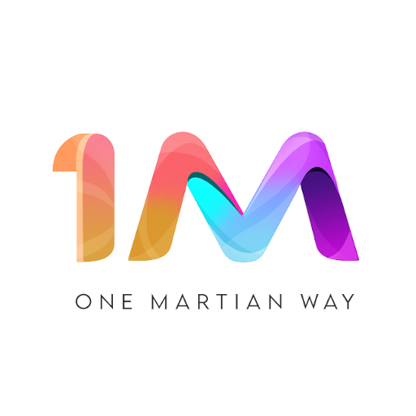
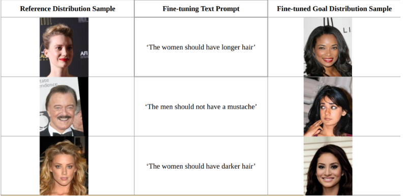
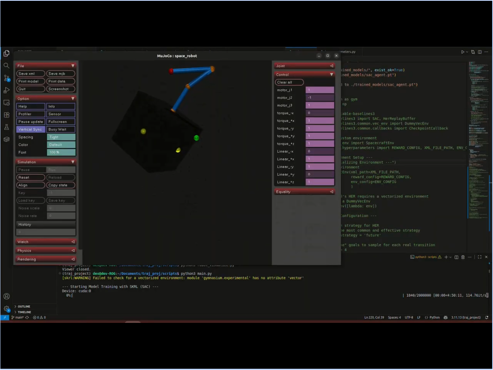
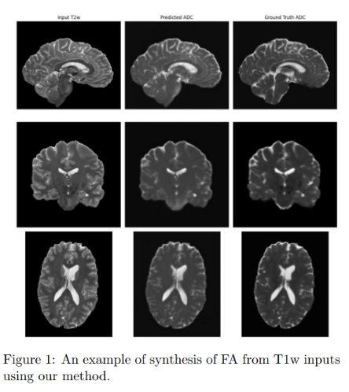
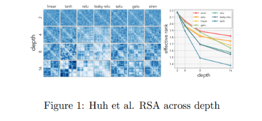
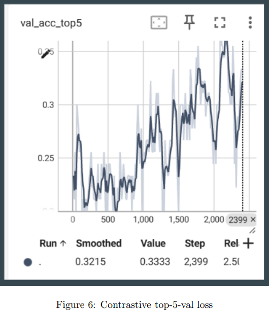

Ojas Taskar
Hey there! I'm Ojas, a Master of Science (MSE) Robotics student at Johns Hopkins University's Laboratory for Computational Sensing & Robotics. I'm currently working on implementing diffusion-based token generation backbones in 5B parameters or lesser Vision-Languages Models, using optimized CUDA kernels for improved pipeline inference, benchmarking against autoregressive models on RTX3060 GPU.
Previously, at IACL, JHU , I worked on bi-directional DDIMs for medical image synthesis with Prof. Jerry Prince. I also worked with Dr. Amir Kheradmand at the VOR Lab, Johns Hopkins Medicine on millimetre-accurate 6 DoF pose estimation. During undegrad, I interned at KIREAP, Inc. with Dr. Omkar Halbe and Mr. Karthik Desai on problems involving motion blur reversal and autonomous vision-based drone landing pipelines. I was also a robotics intern at 1 Martian Way Industries with Mr. Karan Kamdar, on epsilon-greedy deep Q-learning RL algorithms for on-board visual navigation of drones.Statement of Interest: I like to build robust perception systems, working end-to-end from dataset curation, architectures and infrastructioning, evaluation metrics and heuristics, deployment under real-time constraints and closed-loop performance improvement. I also enjoy incorporating geometric information, diffusion-based generative priors and self-supervised methods into learned models via pre/post-training to improve performance without explicit re-training. I'm also interested in using VLMs/VLAs for robot manipulation, navigation and path-planning, focusing on systems that utilize spatial awareness in these models. I write efficient, CUDA-accelerated code for deploying on edge compute boards, and have worked across dockerized systems, distributed training and model profiling to identify bottlenecks.
{kind=link}
News |
Research Experience |
|
 |
Image Analysis and Communication Lab (IACL), JHU
June 2025 – Aug 2025
Focus: Synthesis of paramagnetic rim lesions in healthy-brain susceptibility-weighted MRI imaging.
• Bi-directional conditional DDIM: Wrote a forward diffusion process and reverse diffusion using an embedded UNet-based denoiser, adding lesion mask guidance to treat lesion filling and lesion synthesis as a single-model, inpainting problem.
• Multi-contrast modality synthesis: Incorporated contrast dropout by randomnly zeroing input channels, and a custom cosine noise schedule during DDIM training to increase robustness to incomplete clinical acquisitions and better generalization across T1W, T2W and FLAIR images. • 3D volume consistency: Combined single-plane DDIM inversion to recover 3D axial volumes. Performed cross-modality fusion sagittal and coronal planes, employing gaussian noise and truncated inversion for inter-slice lesion consistency. • Synthesis inference: Trained a conditional image feature caching network for fixed timestep diffusion embedding, preventing re-computation of conditioning image at each time step. Achieved 9.85x faster synthesis output in comparison to previous pipelines. |
|
 |
Vestibular & Ocular Motor Research Laboratory
Sep 2024 – June 2025
Focus: Multi-camera 6-DoF Head Pose Tracking for robot-assisted TMS procedures.
• Multi-camera pose estimation: Implemented 6-DoF patient head pose estimation, ensuring consistency across a 3 camera setup and set-up a point cloud generation pipeline utilising all the cameras.
• Monocular depth ambiguity: Created a training-free, iterative Bayesian plane fitting algorithm to estimate 6D pose of a calibration AprilTag board, reducing monocular depth ambiguity from 40mm to 6mm. • Gaussian mixture models: Deployed Gaussian Mixture Models with customizable covariances for deformable registration of 3D head point cloud to surgical 3D MRI scans. Set-up a PyTorch plug-and-play pipeline to make covariances learnable by conditioning on reference point cloud-MRI pairs, surpassing traditional iterative-closed-point (ICP) methods by 22% improved mean squared error. • Pose graph optimization: Developed a dynamic scene graph consisting of multiple surgical instruments as nodes within a surgical setting on Microsoft HoloLens2. Implemented pose graph optimization to determine efficient tracking of an instrument when seen by multiple HoloLens, ensuring 92% tracking success in presence of occlusion. |
|
 |
KIREAP, Inc
Jan 2024 – Jun 2024
Focus: Vision pipelines for end-to-end autonomous drone landing.
• Motion Blur Reversal: Trained a CNN to determine candidate motion field for 30x30 input blurred image patches, segregating camera motion into 76 different possibilities. Utilised a Markov Random Field model for dense motion field production, and applied deconvolution to determine input blurred image with 64% mean FID score.
• AprilTag False Positives: Trained a lightweight, transposed-convolution encoder CNN on a specifically curated dataset to reliably detect AprilTags in presence of partial occlusion. Incorporated augmentations such as random flip, random crop, scheduled deblurring to increase robustness to orientation ambiguity. Achieved a detection accuracy of 86% on 100 holdout test images. • Passive Tracking System: Developed an onboard AprilTag corner detection algorithm to determine stage-wise landing orientation, providing sequential handoff to next tag. Utilised a Kalman Filter to determine precise direction vector from noisy pixel-level calculations, achieving 77% successful trials. • CUDA kernels for segmentation: Wrote a CUDA kernel to speed-up AprilTag segmentation, deployed onboard NVIDIA Jetson Nano. Achieved 1.8x faster segmentation and performed unit testing for kernel validation using GitHub Actions. |
I have also been a part of:

report
• Designed a GRU architecture to detect cracks in concrete from drone's onboard video, with accuracy of 88%.
• Created a epsilon-greedy RL algorithm with stable baselines3 for a power-line surveying drone, improving fault-finder efficiency by 26%.
• Executed hardware-in-loop simulations using PX4 and ArduPilot on a onboard flight computer to detect compile-time bugs reliably.
Projects |
|
 |
Reinforcement Learning Fine-tuning of Flow Matching Models for Preference-guided Image Generation
Designed a REINFORCE policy gradient based fine-tuning agent to modify a pre-trained flow matching model to generate image distributions semantically similar to a user-defined fine-tuning text prompt. Evaluated results on the CelebA dataset.
• REINFORCE as fine-tuning agent: Defined flow matching generation process as a policy, superceding regular supervised flow matching loss with a reward-based loss, prioritizing semantic alignment with user requirement. Exploited the sequential nature of flow matching transport policy, allowing REINFORCE to interact step-wise, maximizing Markovian attributes of policy gradient update steps.
• Valid flow-matching exploration during optimization: Preserved image generation fidelity under flow matching fine-tuning by computing probable velocity field at each finetuning time step, constraining this field to remain bounded. Evaluated generation fidelity and impact of fine-tuning on requisite dataset. • CLIP similarity reward: Imported CLIP VIT-B/32 as encoding model to align user prompt and generated image in shared latent space, using cosine similarity as reward to train REINFORCE agent. • UNet-based FM model: Implemented a simple encoder-decoder architecture to simulate a simple flow matching model, outputting step-wise velocity flow at each instant. • Implicit fine-tuning bias: Identified a shortcoming of CLIP finetuning, wherein textual prompt ignores implicit assumptions while providing gradient updates. Performed hyperparameter tuning on REINFORCE to mitigate this shortcoming. |
|
 |
Trajectory Optimization and Control for Free-floating Space Manipulators
Deployed a online soft actor-critic (SAC) agent in a MuJoCo/IsaacSim environment, for optimal control and tracjectory optimization of a 6 DoF free-floating space manipulator, wherein the robotic arm is much heavier than its base, leading to complex nonlinear dynamic coupling of their respective motion. Utilized skrl for training/validation pipelines, experimented with optimization techniques such as Hindsight Experience Replay for effective training of the SAC agent.
• System Architecture: Offloaded physics simulation to MuJoCo, using a Python wrapper to standardize interaction with the environment as a Markov Decision Process (MDP). Parametrized reward calculation into a hyperparameters module for easy tuning of weights. Used skrl to deploy SAC and provide gradient upgrades for learning.
• Reward Shaping: Formulated a host of rewards to ensure the task: arm end effector reaches goal position with minimal whole-body movement: is completed. Rewards include task completion, base stability, anchor penalty (to prevent gradual drift), virtual leash for slow but necessary movement and velocity damping to prevent sudden motion. • Learning from Sparse Rewards: Stored all state transitions in a Replay Buffer. Used Hindsight Experience Replay to create synthetic transitions, that relabel any achieved state as the desired goal. This provides the model with a useful learning signal, particularly over a longer horizon, where intermediate steps may/may not contribute to successful trials. • Policy Update: Set-up a training loop to stochastically sample batches from the Replay Buffer, using these batches to train the SAC agent. Logged metrics such as actor/critic loss, mean episodic reward and stepwise component rewards to a Tensorboard for real-time analysis. |
|
 |
Neuroimage Registration & Synthesis
Developed a pipeline to perform automated diffeomorphic registration between T1w/T2w MRI and FA/ADC diffusion tensor imaging, focusing on reducing voxel resolution mismatch and accurate registration in presence of imaging artifacts.
• Deformable inter-modality registration: Utilized the FireANTS package to perform SyN diffeomorphic registration between T1w/T2w and FA-ADC, achieving a ventricular region DICE score of 0.92, between predicted region and ground truth MRI.
• Registration Metrics: Evaluated registration quality by verifying Determinant Jacobian of Deformation Field for voxel-level contraction/expansion, and Inverse Consistency Error to measure deviation from an ideal transformation, where composition of forward and backward mapping return identity. Resulted in Jacobian map value of 0.34 and ICE of 5e-3 for SyN diffeomorphic, confirming accurate registration. • 3D Convolution Network for Synthesis: Fine-tuned a SegResNet 3D convolution, autoencoder based segmentation model to perform synthesis as a systematic delineation task. Achieved validation MSE of 0.0026 for T1w -> FA and 0.0231 for T2w -> ADC. |
|
 |
Investigating impact of low-rank representations in domain generalization within human visual stream
Studied low-rank representations as being a driving factor in the ability of humans to rapidly generalize object recognition across multiple visual scenes, viewing angles and photometric conditions. Drawing from the ability of deep learning networks to generalize rather than overfit just to the training corpus despite being overparametrized, developed relevant hypotheses and proposed experiments as the final research proposal for the class Deep Learning for Cognitive Neuroscience at Johns Hopkins.
• Simplicity in rank embedding: Performed a literature survey to postulate the hypothesis that increasing depth within deep networks produces embeddings that are likelier to be lower rank. Validated this hypothesis by perpetually increasing depth and measuring singular values spectra in the 'Multi-label Multi-object Classification' pipeline in Additional Projects.
• Forcing high rank bias: Proposed using decay penalties on singular values, or adding linear bottleneck layers to force high rank in models with good classification on generalization, observing effects on small ViTs, VGG16 and ResNet. • Tracking emergence of rank: Evaluated brain-aligned models (models trained on neural data-image pairs, such as images-resultant fMRIs) during training, compared representational similarity analysis (RSAs) across layers to correlate rank presence with V1, V2 or V4 layers in the ventral stream. |
|
 |
Contrastive Pre-training for Instance Classification
Implemented a pre-training pipeline, consisting of a contrastive baseline, for a classification task consisting of defect detection in medical tablet manufacturing. The primary goal was to evaluate and verify efficacy of a self-supervised approach to an industrial classification task, particularly in cases where additional classes may show up stochastically during the product lifecyle, making large-scale data labelling impossible.
• Pre-training pipeline: Implemented a SimCLR based pipeline for downstream instance classification, focusing on learning effective representations to perform classification. Deployed InfoNCE loss and y-aware loss as training objectives for the contrastive pre-training module. Achieved 42% downstream top-5-validation accuracy despite fully unsupervised training.
• Downstream classifiers: Wrote from first principles, downstream classification models and evaluated overall validation loss. Tested Vision Transformers (ViTs), VGG16 and ResNet as possible classifiers, with 42% top-5-validation loss for a simple ViT. • Augmentation impact: Analysed data augmentation techniques such as gaussian blur, random resized crop, random flip, normalization, contrast dropout, color jitter, random perspective to evaluate claim (1): composition of data augmentations plays a critical role in determing effective predictive tasks from the SimCLR paper. Determined that gaussian blur, random crop and color jitter have 78% correlation to correct validation metric. Evaluated and reported learning signal maximization over several augmentation techniques for pre-training. • Modular Architecture: Structured training, validation and related scripts in PyTorch Lightning, reducing boilerplate code and enabling seamless debugging. |
Education |
|
|
Johns Hopkins University, Laboratory for Computational Sensing & Robotics
Aug 2024 - May 2026
CGPA: 3.8/4.0 Teaching:Introduction to Robot Learning, Algorithms for Sensor Based Robotics, AI Essentials for Business Coursework: Machine Perception, Medical Image Analysis, Vision as Bayesian Inference, Foundations of RL
• Computer Vision: camera calibration, homography, feature & edge detection, SIFT/SURF/ORB, VAEs, contrastive pre-training
• Machine Perception: markov random fields, gibbs sampling, gradient descent & optimizers, R-CNNs, multi-view stereo, NeRFs, Gaussian Splatting, Lucas-Kanade Tracking • Foundations of Reinforcement Learning: bellman operators, action-value functions, multi-arm bandits, policy gradients, SARSA, Q-learning, actor-critic methods, Proximal Policy Optimization (PPO) • Vision as Bayesian Inference: mixture of Gaussians, semantic segmentation, grab-cut, belief propagation, hidden markov models, compositional models, adversarial attacks, world models • Medical Image Analysis: neuroimage modalities (CT, xray, MRI), histogram equalization, maximum likelihood estimation, registration, diffeomorphic demons, fuzzy k-means clustering, kernel machines, phase-based optical flow, graph segmentation • Trajectory Design for Space Systems: constrained optimization, mixed-integer programming, gradient-free optimization, learning value functions, differentiable MPC |
|
Veermata Jijabai Technological Institute, Mumbai
Jan 2020 - June 2024
Major CGPA: 8.78/10 Coursework: Applied Mathematics, Linear Algebra, Signals & Systems, Numerical Optimization, Data Structures
• Applied Mathematics:ordinary differential equations (ODEs), partial differential equations (PDEs), combinatorics, statistical modeling
• Numerical Optimization: linear programming, convex optimization, singular value decomposition • Data Structures and Algorithms:searching, sorting, graph algorithms, dynamic programming, complexity analysis • Linear Algebra: matrix operations, eigenvalues, vector spaces, linear equations, rank, null spaces • Signals & Systems: fourier & laplace transform, convolution, system stability, nyqvist sampling theorem • Pattern Recognition & ML:PCA, statistical machine learning, morphological operations, convolutional neural networks |
Teaching Experience |
|
|
Johns Hopkins University
Course Website Description: Comprehensive graduate-level course spanning robot dynamics, manipulator jacobian, inverse kinematics, path planning, kalman filtering for state estimation, SLAM and bayesian filtering techniques.
• Devised problem sets, hosted office hours, wrote assignment grading scripts in C++/ROS2, conducted exams and computed participation statistics for a class strength of 95.
• Collaborated with instructional team to update homework assignments for Kalman Filtering, Particle Filtering and expansive-space trees for path planning. • Conducted over 40 hours of office hours, providing hands-on instruction and problem-solving support for undergraduate and graduate students. |
|
Johns Hopkins Carey School of Business
• Conducted office hours, recorded explanatory reference lectures, graded assignments, provided detailed feedback and designed notes.
• Held review sessions for for business & finance professionals to understand machine learning, generative AI, large language models and deep learning in-depth. |
Technical Skills |
|
Languages: Python, C, C++, MATLAB, JAX, CUDA, Julia, Git
ML/AI: PyTorch, TensorFlow, HuggingFace, ONXX, TensorRT, AWS(EC2)
Packages: ROS2, MoveIt, Gazebo, OMPL, MuJoCo, NVIDIA IsaacSim
Miscellaneous: Docker, Bash, LaTeX |
|
Original Template taken from here! |